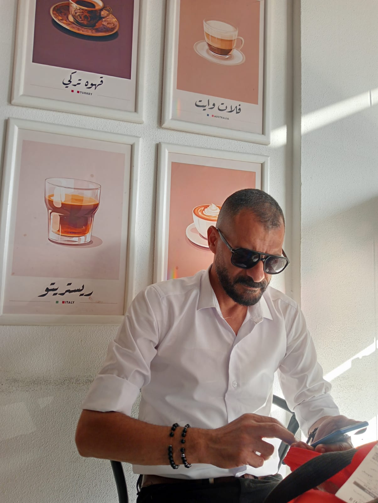

خبرة تمتد لأكثر من 24 عاماً: منذ عام 2002 ونحن نبني أجيالاً في تكنولوجيا المعلومات وإدارة الأنظمة.
رائد تدريس الذكاء الاصطناعي: متخصص في لغات البرمجة الحديثة (Java, JavaScript) وتقنيات البيانات الضخمة (Big Data).
البصمة التعليمية: من قلب مدرسة بورسعيد العسكرية، نقدم منهجاً يدمج بين الانضباط وأحدث صيحات التكنولوجيا العالمية.
"نحن لا ندرس البرمجة فقط.. نحن نصنع مهندسي المستقبل."